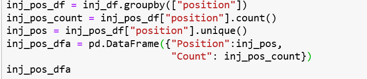

-
Data Sources
We found a dataset of every injured NBA player dating between 2010-2018, detailing player name, injury date, and a brief note on type of injury. We found a second dataset with the 2019 veteran player injuries and merged the two to create our training data set and to do our initial findings analyses. For our test data set we found the 2019 rookie class anthropometrics, which we used alongside our training data to predict rookie injuries during the 2019-2020 season.
-
Initial Analysis
Most of our initial analyses were driven by simple groupby functions, like the one seen below.
From our basic visualizations, we developed a plausible narrative that players playing in the forward and guard positions were more likely to get injured than others.
We also floated another likely narrative that the training practices used at certain universities resulted in an increase in injury.
However, our data limited this narrative. It was hard to know if the training regimen a player underwent in college increased his likelyhood of injury or just his chances of getting into the NBA.
-
Machine Learning
When we revisited our dataset towards the end of the class, we decided to train a model to be able to predict a set of specific injuries based on our data. We first used historical data on players such as position, weight, height, and team. Our model found a good correlation between BMI but not player position, however our data set was limited by the overall low number of each type of injury.
When we then presented our model to a new set of players, the 2019 draft picks, we found that most rookies were not predicted to be injured during the 2019-2020 NBA season.